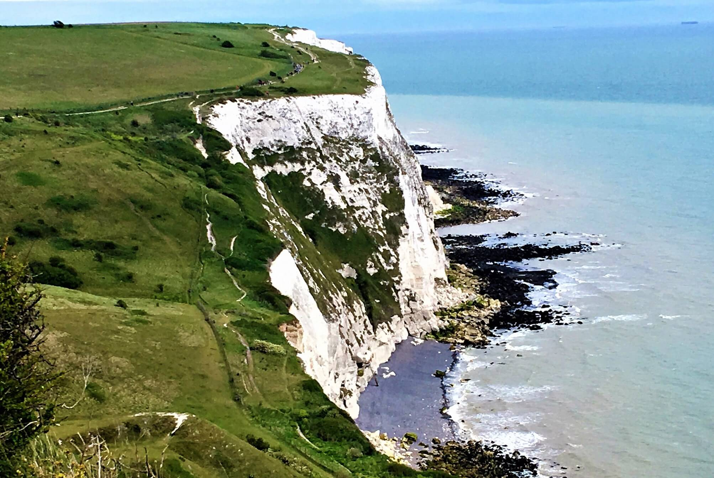
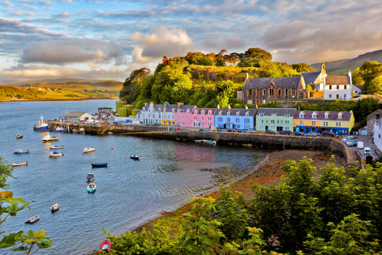
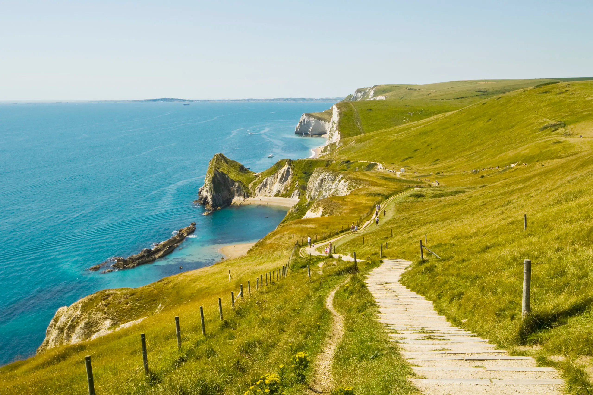
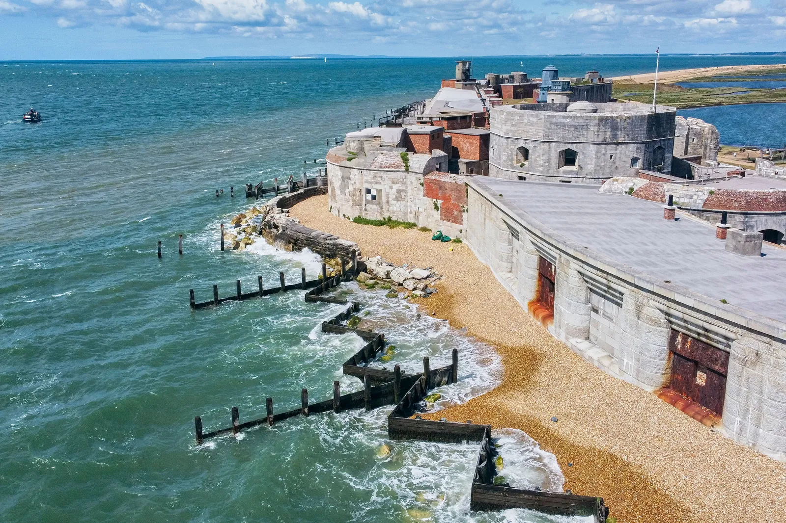

Coastal UK: Places to Visit
Discover dramatic cliffs, sandy beaches, seaside towns and coastal walking routes across the United Kingdom.

Breathtaking cliff-top views and walking routes.

Relaxed coastal towns with harbours, cafés and beaches.
Perfect for scenic walks, sunsets and family trips.

Explore famous routes like the South West Coast Path.
Iconic coastal landmarks and photo spots.

Discover heritage sites with ocean views and history.